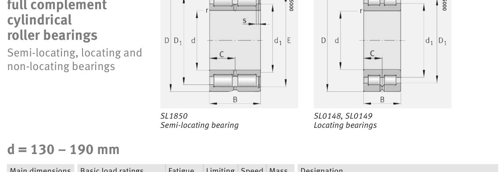

Original catalogue drawing - FAG Schaeffler HR 1, page 544

Scanned from the manufacturer catalogue page listing this part number. All part numbers printed on that table share the same drawing.
Scale cross-section
Blue = inner / outer ring, yellow = rolling element. Drawn to scale from this part's own
dimensions for selection reference only - not a manufacturing or assembly drawing.
Dimension table (mm / inch)
Symbol
Dimension
mm
inch
d
Bore diameter
160
6.2992
D
Outside diameter
240
9.4488
B
Inner-ring / bearing width
109
4.2913
C
Cup / outer-ring width
54.5
2.1457
r
Chamfer (min)
2.1
0.0827
E
Roller-set outside dia.
224.8
8.8504
Notes
Weights are given in kg. Load ratings are shown in both the original catalogue units and the converted value (1 N = 0.2248 lbf). Data is provided for selection reference only - confirm against the latest official catalogue before ordering.
Main dimensions
Bore d (mm)
160
Outside dia. D (mm)
240
Width B (mm)
109
Cup width C (mm)
54.5
Inner-ring OD d1 (mm)
184.8
Inner-ring shoulder dia. D1 (mm)
215.8
Dimension E (mm)
224.8
Dimension s (mm)
6
Load ratings & speeds
Basic dynamic load rating Cr (lbs)
209072
Basic static load rating Cor (lbs)
361942
Basic dynamic load rating Cr (N)
930000
Basic static load rating C0r (N)
1.61e+06
Fatigue limit load Cur (N)
207000
Limiting speed nG (rpm)
1,600
Reference speed nB (rpm)
1,030
Weight
Weight (kg)
12.2
Mounting dimensions (fillets / shoulders)
Housing fillet r max (mm)
2.1
Shaft shoulder dc (mm)
184.5
Housing shoulder Da (mm)
216
Housing shoulder Db (mm)
224.5
Housing fillet ra max (mm)
2.1
Bearing life (ISO 281 basic rating life)
C / P
Equivalent load P (N)
L10 (106 rev)
L10h at 500 rpm
4
232,500
102
3,386
6
155,000
392
13,083
8
116,250
1,024
34,133
10
93,000
2,154
71,814
15
62,000
8,323
277,449
Basic rating life per ISO 281: L10 = (C/P)10/3 with C = 930,000 N. Hours = L10 x 106 / (60n). Life-modification factors for lubrication, contamination and temperature (aISO) are not included.
Source & traceability
Brand
FAG
Source catalogue
FAG / Schaeffler Rolling Bearings HR 1
Catalogue page
p.544 (dimensions)
Load ratings in newtons, fatigue limit load Cur, limiting speed nG and reference speed nB.
Send us the quantity you need and we will come back with price and
lead time, normally within 24 hours. Equivalent parts from other brands can be quoted at the same time.